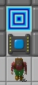
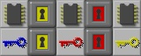
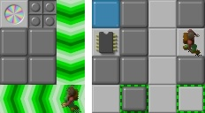
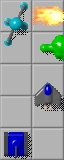
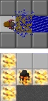
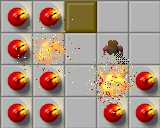
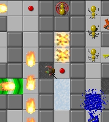
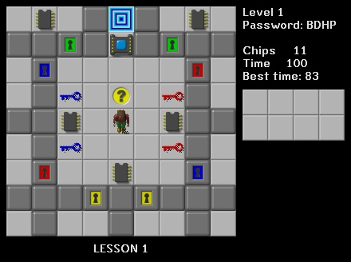
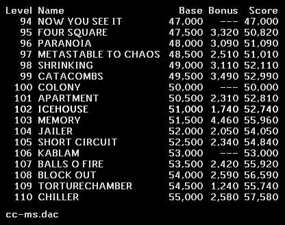

|


The player controls Chip, navigating him through his challenges. The
object of each level of the game is to find and reach the exit tile,
which takes you to the next level. The exit is frequently (but not
always) guarded by a chip socket. To move past the chip socket, Chip
must collect a certain number of computer chips. The number of
computer chips needed is different in each level.
 Besides chip sockets, there are also four different kinds of doors. The doors require keys in order to be opened. The doors and keys are color-coded so that you can see which keys will open which doors.  Also occupying many of the levels are other creatures. Most (but not all) of them move about in simple, predictable patterns, and without regard for Chip's presence. The creatures know enough to avoid running into each other, but a collision with Chip is fatal. Sometimes it is enough just to keep clear of the creatures. At other times it is necessary to know exactly how they move, in order to avoid them. Sometimes the creatures can even be worked to Chip's advantage. If four kinds of doors aren't enough to provide a challenge, there are also trick walls. Blue walls are sometimes real and sometimes illusory, disappearing when Chip touches them. Some walls can change into a floor and back to wall when a button is pressed.  Even the floors of the levels are not simple, but come in different forms. Some forms, such as water or fire, are instantly fatal unless Chip has acquired protection from them. Other forms, such as ice or force floors, are safe but cause Chip to go sliding at high speeds. Still other forms, such as gravel, keep other creatures at bay.  Dirt blocks are like walls, except that Chip can push them around. Chip can push them into water in order to make them passable. Sometimes a group of blocks wind up providing Sokoban-like puzzles.  This is just the tip of the iceberg. There are also clone machines, teleports, bombs, bear traps, thieves, popup walls, and so on. Each level is an individual and unique combination of challenges. There are literally thousands of different levels which are freely available. |
 
The main display shows Chip and his immediate surroundings. To the right of this display is shown the basic information about the current level. The most important data shown here are how many seconds are left on the clock, and how many chips still need to be collected. Below this is a visual display that shows what keys and footgear Chip has collected on this level, if any.
The screenshot on the right shows Tile World's score display.
For more information about Chip's Challenge and Tile World, see the Tile World documentation.